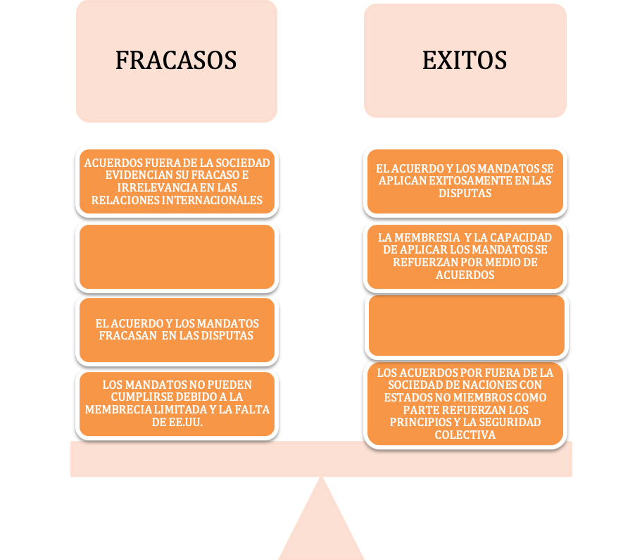
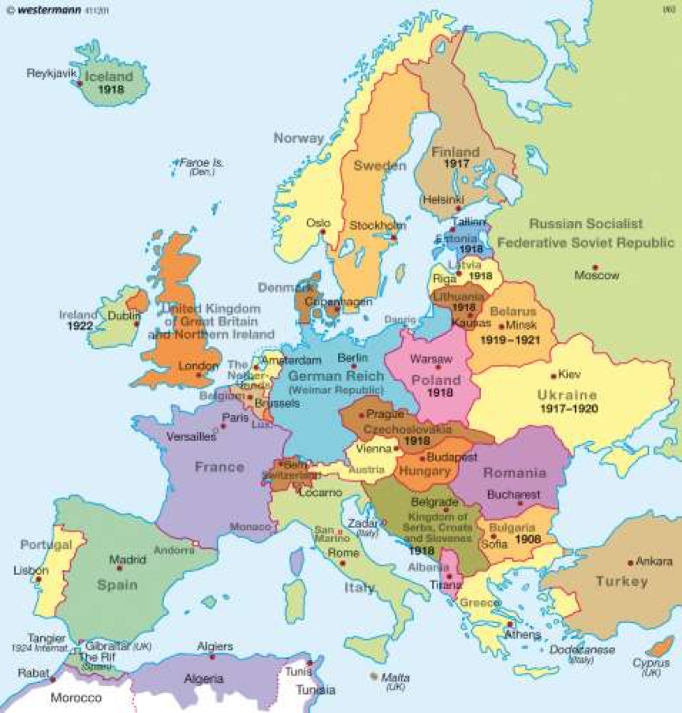
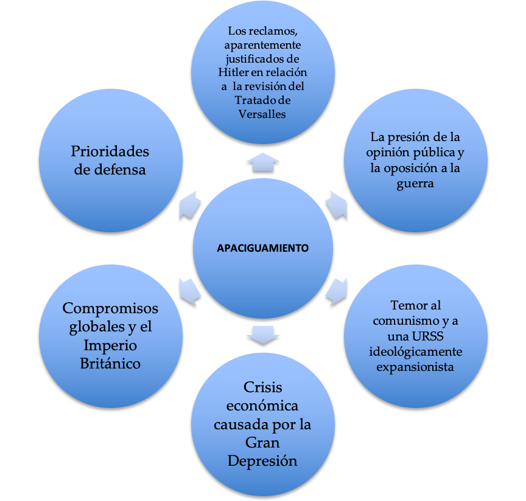

1. Versalles a Berlín: Enfoques de Aprendizaje
Esta página contiene Enfoques de Aprendizaje que se suman a las actividades en páginas separadas que se superponen con los temas tratados en esta sección.
Estos Enfoques de Aprendizaje están diseñados para que los estudiantes de nivel superior cubran algunas áreas con más detalle que lo que habrían hecho para la Prueba 1 y la Prueba 2.
Preguntas orientadoras:
¿Cuáles fueron los términos de los tratados de paz que se redactaron al final de la Primera Guerra Mundial?
¿Cuáles fueron los éxitos y fracasos de la Sociedad de las Naciones?
¿Cuáles fueron los acontecimientos en los estados sucesores de Europa Central y Oriental?
¿Qué éxito tuvo la seguridad colectiva hasta 1939?
¿Cuáles fueron los objetivos, los problemas y el alcance del éxito de las políticas exteriores de Italia y Alemania entre 1919 y 1939?
¿Cuáles fueron los objetivos, las cuestiones y el grado de éxito de la política de apaciguamiento?
¿Cuál fue el papel de la política exterior soviética hasta 1941?
¿Qué éxito tuvo la política de apaciguamiento?
¿Cuál fue el impacto de Chamberlain y el Acuerdo de Munich?
¿Cómo se desarrolló el conflicto europeo entre 1939 y 1941?
¿Qué tan efectiva fue la alianza guerra entre 1941 y 45?
¿Cuáles fueron las principales razones de la derrota del Eje en 1945 y la victoria de los aliados?
¿Cuál fue el impacto de la Segunda Guerra Mundial en las poblaciones civiles de dos países cualesquiera entre 1939 y 1945?
1.Qué tan exitosos fueron los tratados de paz que se redactaron al final de la Primera Guerra Mundial?
"Las minorías de 1919 estaban probablemente más descontentas que las de 1914".
Alan Sharp, Modern History Review, noviembre de 1991
No menos de dos quintas partes de nuestro pueblo serán sometidas a dominaciones extranjeras, sin ningún tipo de plebiscito y en contra de su indiscutible voluntad, quedando así privadas de su derecho a la libre determinación'.
Otto Bauer, Ministro de Asuntos Exteriores de Austria
El Tratado de Versalles trataba de Alemania (ver esta página para una discusión de esto: 3. Primera Guerra Mundial: Efectos cada nación derrotada firmó un tratado separado como parte del Acuerdo de Versalles:
Austria: Tratado de Saint Germain (10 de septiembre de 1919)
Hungría: Tratado de Trianon (4 de junio de 1920)
Bulgaria: Tratado de Neuilly (27 nov. 1919)
Turquía: Tratado de Sèvres (10 ago 1920)
Tarea Uno
Enfoques de Aprendizaje: Habilidades de pensamiento e investigación.
Divídanse en grupos de 4.
1. Cada estudiante debe investigar UNO de los tratados con más profundidad [los tratados con Turquía deben ser explorados por un mismo estudiante]. Retroalimente sus hallazgos a su grupo.
(Alternativamente, la clase podría trabajar en grupos sobre cada tratado y cada grupo podría crear una presentación a la clase sobre su tratado particular)
2. Asegúrate de cubrir lo siguiente:
- Los objetivos de los pacificadores con respecto a cada Tratado
- Los términos específicos de cada Tratado (incluye un mapa)
- Las cuestiones que surgieron al acordar los términos, y las cuestiones que surgieron en los cinco primeros años después de la firma de los tratados
- Las respuestas tanto de la potencia derrotada como de los pacificadores al acuerdo de paz. (ver más abajo para una ayuda adicional)
Como habrán visto en sus presentaciones, hubo muchas dificultades para crear acuerdos de paz para Europa oriental y sudoriental.
La aplicación del principio de la libre determinación
Era difícil aplicar el principio de la libre determinación de manera coherente y justa. Al crear Checoslovaquia, la zona austríaca de los Sudetes pasó al nuevo país para darle una frontera montañosa defendible y una industria. Sin embargo, esta zona contenía alrededor de 3,5 millones de germanoparlantes. Así, en general, Checoslovaquia contenía cinco grupos raciales principales: checos, polacos, magiares, rutenos y germanoparlantes. La nueva Yugoslavia también contenía muchas nacionalidades dentro de sus fronteras. (Ver la cita de Alan Sharp arriba).
La creación de países estables
También fue difícil hacer que los nuevos estados fueran económicamente viables; tanto Austria como Hungría sufrieron un colapso económico en 1922.
La debilidad económica contribuyó a la inestabilidad política de estos países en los años posteriores a la guerra; esto también crearía un vacío político en Europa central que haría de esta zona un blanco fácil para la dominación alemana.
Los problemas descritos anteriormente hicieron que los tratados causaran mucho resentimiento:
- Hungría se resintió de la pérdida de sus territorios, en particular de Transilvania. Checoslovaquia, Rumania y Yugoslavia formaron más tarde la Pequeña Entente con el objetivo de protegerse mutuamente de cualquier intento húngaro de recuperar el control de sus territorios
- Turquía estaba muy resentida por el acuerdo y esto llevó al golpe de Kemal y a la revisión del Tratado de Sevres
- Italia llamó al asentamiento "la paz mutilada" ya que no había recibido la costa dálmata y Fiume. En 1919, Gabriele D'Annunzio ocupó Fiume con una fuerza de partidarios; en 1924 Yugoslavia entregó Fiume a los italianos
Tarea dos
Enfoques de Aprendizaje: Habilidades de pensamiento
De a dos, considere las citas de estos historiadores. Para cada cita, analice qué punto clave se está haciendo con respecto al problema de cada uno de estos Tratados. ¿Qué indican estas citas sobre los problemas potenciales futuros que han sido creados por estos Tratados?
Tratado de St. Germain
Los términos del Tratado produjeron un sentimiento de completa desesperanza en todo el país. Hubo una abierta defensa de una inmediata unión con Alemania incluso entre personas que hasta ahora se habían opuesto a la idea. Se sostuvo que el Tratado les daba las alternativas de convertirse en una colonia de los Aliados o de ser absorbidos por Checoslovaquia...
Malcolm Bullock, Austria 1918 - 1938: A Study in Failure, 1939
Tratado de Neuilly
Bulgaria escapa con pérdidas mucho menores que cualquier otro miembro de la alianza derrotada. Sin embargo, está tan indignada como cualquiera de ellos por el tratado de paz que le fue impuesto... Pero está indignada, no tanto por lo que ha perdido, sino por lo que no ha ganado.
Charles Haskins y Robert Lord, Some Problems of the Peace Conference, 1920
Tratado de Trianon
Los términos del tratado eran muy duros, mucho más duros que los impuestos a Alemania en Versalles... Los territorios separados incluían provincias tan "históricas" como Transilvania, considerada durante mucho tiempo como la cuna del estado nacional húngaro, una circunstancia que añadió un combustible extra a la propaganda revisionista de los años venideros...
Andrew C. Janos, The Politics of Backwardness in Hungary: 1828-1945, 1982
Tarea tres
Enfoques de Aprendizaje: Habilidades de pensamiento
En su grupo, haga un plan para las siguientes preguntas de la Prueba 3:
Examine las cuestiones y las respuestas al Tratado de Versalles.
Discuta los objetivos de los acuerdos de paz (1919-1923) y las cuestiones que surgieron con los tratados que siguieron a la Primera Guerra Mundial.
Evalué los éxitos y fracasos de los acuerdos de paz (1919-1923) hasta 1929.
¿Hasta qué punto los acuerdos de paz (1919-1923) cumplieron los objetivos de los pacificadores después de la Primera Guerra Mundial?
Tarea Cuatro
Enfoques de Aprendizaje:: Habilidades de pensamiento
Considere la pintura de William Orpen que muestra el ataúd de un soldado británico en el Salón de la Paz de Versalles.
Orpen asistió a la Conferencia de Versalles como pintor oficial. ¿Qué mensaje crees que estaba transmitiendo a través de esta pintura?
2. ¿Cuáles fueron los éxitos y fracasos de la Sociedad de Naciones?
Siga el enlace al Documento 2: - Segunda Guerra Mundial - causas y complete las actividades en las preguntas 2, 3 y 4
Tarea Uno
Enfoques de Aprendizaje:: Habilidades de autogestión y de pensamiento
De dos, discutan la siguiente pregunta de ensayo:
¿Hasta qué punto la Sociedad de Naciones fue un fracaso?
Van a redactar un plan de ensayo detallado, sin embargo, sólo escribirán la "mitad" del plan.
Estudiante
Desarrolle tres párrafos que argumenten temáticamente que la Sociedad de Naciones fracasó incluyendo:
- Debilidades inherentes: estructura, mandato y miembros.
- Evidencia de los fracasos en la década de 1920
Estudiante B
Desarrolle tres párrafos que argumentan temáticamente que la Sociedad de Naciones tuvo éxito, incluyendo:
- Fortalezas inherentes: estructura, mandato y miembros
- La evidencia de los éxitos en los años 20 y las medidas para fortalecer a la Sociedad
Puedes usar la información del gráfico de abajo para ayudar a desarrollar tus párrafos.

3. ¿Cómo se desarrollaron los acontecimientos en los estados sucesores de Europa Central y Oriental?
Tarea Uno
Enfoques de Aprendizaje: Habilidades de pensamiento e investigación

1. Con un compañero busque un mapa de la Europa de antes de la Primera Guerra Mundial y compárelo con el mapa de la posguerra de arriba. ¿Cuáles son las principales diferencias?
2. Formen grupos de siete. Cada estudiante investigará uno de los siguientes estados "sucesores":
- Finlandia
- Estonia
- Letonia
- Lituania
- Checoslovaquia
- Yugoslavia
- Polonia
Es necesario desarrollar una "guía" de su estado sucesor en el período de entreguerras, desde su establecimiento después de la Primera Guerra Mundial hasta el estallido de la Segunda Guerra Mundial en 1939. Debe incluir información y detalles sobre lo siguiente:
- Naturaleza política del estado [por ejemplo, democracia, dictadura militar, etc.]
- Situación económica [incluyendo las principales fortalezas, limitaciones, evidencia de estabilidad y crecimiento y evidencia de problemas].
- Desarrollos sociales [esto podría incluir la educación, las artes, el papel de la mujer en la sociedad, el papel de la religión en la sociedad, etc.]
- Política exterior [esto podría incluir objetivos, amenazas, tratados, alianzas y otros]
Presente sus hallazgos a su grupo.
3. Como grupo, discuta las siguientes preguntas:
- ¿Qué estados parecieron ser los más exitosos política, económica y socialmente en el período de entreguerras?
- ¿Cuáles eran los principales "objetivos" y "amenazas" de los estados sucesores?
- ¿Qué estados aplicaron una política exterior "agresiva" o "expansionista"?
- ¿En qué medida los estados sucesores eran países "estables y viables" a largo plazo?
4. ¿Cuánto éxito tuvo la seguridad colectiva hasta 1939?
Tarea Uno
Enfoques de Aprendizaje: Habilidades de pensamiento
Ahora, en grupos de cuatro, planifiquen la siguiente pregunta de ensayo:
Discuta los éxitos de la seguridad colectiva en Europa hasta 1939
Haga click en el ojo para pistas
Introducción: Es necesario abordar el término de instrucción, es decir, "Discutir" y por lo tanto ofrecer una crítica "equilibrada". Expliquen que el mecanismo de seguridad colectiva era la propia Sociedad de Naciones. Discutan también los intentos fuera de la Sociedad de Naciones para fortalecer la seguridad colectiva. Deben señalar qué éxitos hubo para la seguridad colectiva y cómo / por qué en última instancia, no pudo mantener la paz en Europa.
Párrafos del cuerpo principal:
- Desarrollar tres párrafos que discutan el éxito de la seguridad colectiva en términos de sus objetivos y la resolución del conflicto entre 1919 y 1939
- Desarrolla tres párrafos que discuten los fracasos de la seguridad colectiva en términos de sus objetivos y la resolución del conflicto entre 1919 y 1939
Conclusión: En resumen, ¿fue exitosa la búsqueda de la seguridad colectiva en el período de entreguerras
5. ¿Cuáles fueron los objetivos, los problemas y el grado de éxito de las políticas exteriores de Italia y Alemania entre 1919 y 1939
Note que los ENFOQUES DE APRENDIZAJE sobre este tema pueden encontrarse aquí: PS3: El avance hacia la guerra global
Tarea Uno
Enfoques de Aprendizaje: Autogestión, pensamiento y habilidades de investigación
Crea una línea de tiempo de las políticas exteriores italianas y alemanas entre 1919 y 1939. Pon los eventos concernientes a Italia sobre la línea y los eventos concernientes a Alemania debajo de la línea:
Italia
1919----------------------------------------------------------------------------------------------1941
Alemania
Añade un recuadro sobre la línea que señala los objetivos de la política exterior italiana, por ejemplo.
- Expandir el territorio colonial en África
- Ganar el control del Mediterráneo
Añade un recuadro debajo de la línea que señala los objetivos de la política exterior alemana, por ejemplo.
- Cooperar con Gran Bretaña y Francia para revisar el tratado de paz
- Establecer el espacio vital en el Este
Formen grupos de cuatro. Discutan sobre cuándo los "objetivos" de la política exterior viraron y/o cambiaron para Alemania e Italia. ¿Alguno de los dos países tuvo éxito hasta 1933?
Discutan hasta qué punto a] Italia tuvo éxito en la consecución de sus objetivos de política exterior b] Alemania tuvo éxito en la consecución de sus objetivos de política exterior para 1941.
6. ¿Cuáles fueron los objetivos, los problemas y el grado de éxito de la política de apaciguamiento?
Obsérvese que estas cuestiones también se tratan en este PS3: El avance hacia la Guerra Global y aquí: Segunda Guerra Mundial - causas
También vea algunos excelentes videos aquí sobre el apaciguamiento: 2. German and Italian expansion: Videos and activities
El apaciguamiento era una política diplomática de intentar hacer concesiones a las naciones para evitar la guerra. Aunque podrá encontrar pruebas del "apaciguamiento" en acción antes de 1937 [vuelve a tu línea de tiempo de la política exterior italiana y alemana, en particular en los años treinta], la política está estrechamente relacionada con el Primer Ministro británico desde 1937, Neville Chamberlain. Algunos historiadores sostienen que la política era débil y que, al ceder a los Estados expansionistas, fomentó y alentó la agresión que acabaría desembocando en una guerra general en Europa en 1939. Sin embargo, los contemporáneos y algunos historiadores también sostienen que la política era positiva, necesaria y que en la búsqueda de la paz los "apaciguadores" simplemente no pueden ser considerados responsables de causar la guerra.
Primera tarea
Enfoques de Aprendizaje: Habilidades de pensamiento
Añade información al mapa mental de la hoja adjunta para explicar los factores que llevaron al apaciguamiento.
En pequeños grupos discutan cómo cada uno de los siguientes factores promovió una política de apaciguamiento hacia la Alemania de Hitler y la Italia de Mussolini.
Mapa mental de las razones para elapaciguamiento

Tarea Dos
Enfoques de Aprendizaje: Habilidades de Pensamiento
De a dos, discutan en más detalle cómo cada uno de los argumentos que ve en la flecha de abajo contribuyó al estallido de la guerra en 1939
7. ¿Cuál fue el papel de la política exterior soviética hasta 1941?
Tarea Uno
Enfoques de Aprendizaje: Habilidades de pensamiento
1. Según la fuente que figura a continuación, ¿cuáles eran los objetivos de Stalin con respecto a la política exterior hasta 1935?
Occidente había invadido Rusia después de la toma del poder por los bolcheviques en octubre de 1917. La URSS había sido entonces aislada diplomáticamente en los años 20, y no se la había hecho miembro de la Sociedad de Naciones. De hecho, fue tratada como un estado "paria". El establecimiento del primer estado comunista había creado el temor en las democracias occidentales de que el comunismo se extendiera por toda Europa. Gran Bretaña seguía siendo hostil a la URSS y no restableció las relaciones diplomáticas hasta 1930. Bajo Stalin se promovió la idea del "socialismo en un solo país", y los planes quinquenales movilizaron a la población para la industrialización. Aunque las actividades de la internacional comunista alarmaron a Occidente, Stalin orientó su política exterior en la década de 1930 hacia un acercamiento a las democracias para contener la propagación del fascismo. Stalin un "frente popular antifascista". Entre 1931 y 1932 la URSS firmó pactos de no agresión con Afganistán, Finlandia, Lituania, Letonia, Estonia, Polonia y Francia. En pos de su nuevo objetivo de política exterior, Stalin se unió a la Sociedad de Naciones en 1934. Esto también demostró un reajuste en las políticas de las democracias occidentales que estaban cada vez más alarmadas por los discursos y acciones de la Alemania de Hitler. En 1935 la URSS firmó pactos de asistencia mutua con Francia y Checoslovaquia.
Los intentos de Stalin de formar una alianza antifascista fueron frustrados por la política de apaciguamiento. Cuando Gran Bretaña no defendió la democracia en la Guerra Civil Española y siguió aplicando una política de "no intervención", a pesar de que las fuerzas nacionalistas estaban respaldadas por una considerable asistencia militar de Italia y Alemania, a Stalin le pareció evidente que Gran Bretaña consideraba el comunismo una amenaza mayor que el fascismo y el nazismo.
El punto de inflexión de la política exterior soviética se produjo en septiembre de 1938. Cuando Chamberlain apaciguó a Hitler y firmó el Acuerdo de Munich estaba claro que todas las esperanzas de una alianza antifascista habían terminado. De hecho, a pesar del pacto de asistencia soviética con Checoslovaquia y de la importancia estratégica territorial del país para la URSS, Stalin no fue invitado a participar en las negociaciones.
Tarea Dos
Enfoques de Aprendizaje: Habilidades de pensamiento
1. De a dos, discutan las razones de Stalin para firmar el Pacto Soviético Nazi. (Haga clic en el ojo para comprobar que ha considerado todos los puntos.)
2. ¿Cuáles fueron las motivaciones de Hitler para firmar el Pacto?
3. ¿Qué papel considera que desempeñó Stalin en el estallido de la Segunda Guerra Mundial?
La alianza antifascista no se había materializado
- Las políticas de apaciguamiento de Gran Bretaña y Francia habían alentado a Hitler a expandirse hacia el este
- La Unión Soviética no estaba preparada para una gran guerra en 1939
- Stalin había purgado su propio ejército y necesitaba reconstruirlo
- Un pacto con Alemania ofreció a Stalin ganancias territoriales que incluían partes de Polonia y los Estados Bálticos.
- Un pacto con Alemania 'compraría tiempo' para la URSS. Además, el territorio ganado le daría a la URSS un “estado tapón”.
8. ¿Cuán exitosa fue la política de apaciguamiento?
Para evaluar el éxito de la política de apaciguamiento, debemos empezar por considerar sus objetivos. Si era puramente una política para prevenir otra guerra importante, entonces claramente fracasó cuando la guerra estalló en septiembre de 1939.
Tarea Uno
Enfoques de Aprendizaje: habilidades de pensamiento
De a dos, consideren los siguientes beneficios potenciales del apaciguamiento para Gran Bretaña y Francia:
- Gran Bretaña y Francia no estaban preparadas para la guerra a principios y mediados de los años 30 y se estaban recuperando de la Gran Depresión
- La opinión pública apoyó el apaciguamiento; los recuerdos de la Primera Guerra Mundial eran aún muy vivos
- La política compró tiempo para que Gran Bretaña y Francia se rearmaran
- Como democracias, Gran Bretaña y Francia tenían que persuadir a la opinión pública para que apoyara una guerra, y por lo tanto el apaciguamiento demostró a la opinión pública que Hitler no podía ser apaciguado o "satisfecho" a través de un acuerdo y que la guerra era necesaria
- Gran Bretaña necesitaba persuadir a su Imperio de que la guerra era inevitable
2. Haz un esquema para la siguiente pregunta de ensayo:
¿En qué medida la política de apaciguamiento tuvo éxito hasta 1939?
9. Cuál fue el impacto de Chamberlain y el Acuerdo de Munich?
Tarea Uno
Enfoques de Aprendizaje: Habilidades de pensamiento
1. De a dos, investiguen la Conferencia de Munich y el Acuerdo de Munich.
2. Lean la Fuente A y la Fuente B y respondan a las preguntas que siguen.
Fuente A
Un extracto de The Times, un periódico británico, 1 de octubre de 1938.
Ningún conquistador que regresa de la victoria en el campo de batalla ha vuelto a casa más noble que el Sr. Chamberlain de Munich ayer; y tanto el Rey como el pueblo han mostrado por la forma de su recepción su sentido de logro...
Si el Gobierno del Reino Unido hubiera estado en manos menos decididas, es seguro como puede ser que la guerra, incalculable en su alcance, habría estallado contra los deseos de todas las personas afectadas. El horror de tal catástrofe no fue menor en Alemania. Tanto se desprende del inmenso entusiasmo popular con el que el Sr. Chamberlain fue recibido en cada una de sus tres visitas... En efecto, estas visitas parecen haber aumentado la comprensión del Führer de los sentimientos de su propio pueblo, con un efecto definido en su política.
Esperemos que pueda continuar viendo la sabiduría de permitirles en todo momento conocer los sentimientos de otros pueblos en lugar de imponer entre ellos una cortina de humo de ignorancia y propaganda. A nuestra nación le queda por demostrar nuestra gratitud al Sr. Chamberlain, principalmente aprendiendo las lecciones que nos enseñan los grandes peligros por los que hemos sido tan bien conducidos - que sólo un pueblo preparado para afrontar lo peor puede, a través de sus líderes, hacer que la paz prevalezca en una crisis; pero que la amenaza de la ruina de la civilización se repetirá a menos que las injusticias se enfrenten y se eliminen en tiempos tranquilos, en lugar de dejarse enconar hasta que sea demasiado tarde para remediarlo.
Fuente B
Un extracto de un discurso de Winston Churchill, miembro del parlamento británico, en la Cámara de los Comunes, el 5 de octubre de 1938.
Empezaré diciendo lo que todo el mundo quisiera ignorar u olvidar... a saber, que hemos sufrido una derrota total y absoluta, y que Francia ha sufrido más que nosotros...
Nadie había estado en una lucha más decidida e intransigente por la paz que el Primer Ministro. Todo el mundo lo sabe. Nunca ha habido una determinación tan intensa de mantener y asegurar la paz. Esto es muy cierto. Sin embargo, no estoy muy claro por qué el público creía que Gran Bretaña y Francia entraría en una guerra con Alemania en este momento. De hecho, estaban listos todo el tiempo para sacrificar a Checoslovaquia. Los términos que el Primer Ministro trajo consigo... podrían haber sido acordados fácilmente, creo, a través de los canales diplomáticos ordinarios en cualquier momento del verano...
Todo ha terminado. Silenciosa, triste, abandonada, rota, Checoslovaquia retrocedió a la oscuridad. Ha sufrido en todos los sentidos por su asociación con las democracias occidentales y con la Sociedad de Naciones de la que siempre ha sido una servidora obediente...
Cuando pienso en la esperanza de una larga paz que todavía estaba ante Europa a principios de 1933 cuando Herr Hitler obtuvo el poder, y en todas las oportunidades de detener el crecimiento del poder nazi que han sido descuidadas o desaprovechadas, no puedo creer que exista un paralelo en toda la historia...
No les guardo rencor a nuestra leal y valiente gente, que estaba dispuesta a cumplir con su deber a cualquier precio... No les guardo rencor al natural arrebato de alegría y alivio cuando supieron que la dura prueba ya no les sería exigida, sino que deberían saber la verdad... y no supongan que éste es el final. Esto es sólo el principio de la cuenta.
Preguntas:
- Identifique los puntos clave de la Fuente A y la Fuente B en relación con el Acuerdo de Munich.
- Con referencia a su origen, propósito y contenido, analice el valor y las limitaciones de la Fuente B para un historiador que estudie la Conferencia de Munich.
- Compare y contraste lo que la Fuente A y la Fuente B revelan sobre el resultado de la Crisis de Munich
10. ¿Cómo se desarrolló el conflicto europeo entre 1939 y 1941?
Tarea Uno
Enfoques de Aprendizaje: Habilidades de pensamiento, investigación y comunicación
Su clase ideará un juego de roles de los eventos que condujeron al estallido y desarrollo del conflicto europeo entre 1939 y 1941.
Su juego de rol se desarrollará en una sala de redacción en un país neutral. Deberán asignar papeles para el "presentador de noticias", corresponsales extranjeros en diferentes países europeos, un corresponsal en China y Japón y dos corresponsales en los Estados Unidos.
Comienza investigando la línea de tiempo de los eventos entre:
Agosto de 1939 Diciembre, 11 de 1941
Pacto Soviético Nazi__________________________________________ Hitler declara la guerra a los EE.UU.
Cada corresponsal da entonces un "informe en directo" sobre los acontecimientos a medida que suceden, y el equipo de la sala de redacción proporciona un "análisis" del impacto de estos acontecimientos en el conflicto europeo.
11. ¿Qué tan efectiva fue la Gran Alianza, 1941 - 45?
La Gran Alianza se desarrolló después de que los EE.UU. entraran en la Segunda Guerra Mundial y de que Hitler declarara la guerra a los Estados Unidos el 11 de diciembre de 1941. Fue la alianza de Gran Bretaña, la Unión Soviética y los EE.UU. contra las potencias del Eje de Alemania, Italia y Japón.
Tarea Uno
Enfoques de Aprendizaje: Habilidades de pensamiento y comunicación
En pequeños grupos lean la línea de tiempo de los eventos en el PDF adjunto. Identifiquen los siguientes temas:
A] Dónde y cuándo la Gran Alianza se involucró en la lucha en las mismas campañas / áreas
B] ¿Qué socio de la Gran Alianza parece estar involucrado en la mayoría de los combates de la guerra en tierra en Europa?
B] ¿Qué socios de la Gran Alianza participaron en la mayoría de los combates en la guerra del Atlántico en el mar?
C} ¿Cuál fue el papel de la guerra en el aire en Europa?
D] ¿Qué razones podrían dar los EE.UU. y Gran Bretaña para retrasar la apertura de un "segundo frente" en Francia hasta junio de 1944?
Chnologia de Segunda Guerra Mundial
12. ¿Cuáles fueron las principales razones de la derrota del Eje en 1945 y la victoria de los aliados?
Tarea Uno
Enfoques de Aprendizaje: Habilidades de investigación y autogestión
En pequeños grupos, investiguen las razones del éxito de los aliados en cada una de las siguientes áreas:
- La guerra en tierra
- La guerra en el mar
- La guerra en el aire
- Estrategia general
- Tecnología
- Organización de la economía
Puede utilizar la tabla adjunta para ayudarle
Qué otros factores contribuyeron al éxito de los Aliados?
Tabla para explicar por que la victoroia fue de los aliados
Tarea Dos
Enfoques de Aprendizaje: Habilidades de autogestión y comunicación
1. Usando su investigación de la tarea anterior, reorganice su evidencia en un nuevo gráfico bajo dos columnas: 1) Fortalezas aliadas y 2) Debilidades del Eje
2. Organicen un debate en clase sobre la siguiente resolución:
"La guerra se ganó en 1945 no por las debilidades alemanas sino por las fuerzas aliadas".
Richard Overy. Why the Allies Won.
13. ¿Cuál fue el impacto de la Segunda Guerra Mundial en las poblaciones civiles de dos países cualesquiera entre 1939 y 1945?
Tarea Uno
Enfoques de Aprendizaje: Habilidades de investigación, habilidades de pensamiento y habilidades de comunicación
Formen grupos de cuatro. Elijan UN país para investigar. Hay mucho material sobre los siguientes países que facilitaría un buen ensayo sobre este tema:
Gran Bretaña
Alemania
URSS
Francia
Sin embargo, se puede elegir cualquier estado europeo impactado por la Segunda Guerra Mundial.
Deberías enfocar tu investigación en las siguientes áreas:
- Impacto de la guerra en la vida social y cultural
- Impacto de la guerra en el papel de la mujer en la sociedad
- Impacto de la guerra en la economía y los estándares de vida
- Impacto de la guerra en términos de bajas / impacto militar en el frente doméstico / ocupación / resistencia
- Impacto de la guerra en la política y la sociedad civil
Retroalimenta tu investigación a los otros grupos. Ahora tendrán que seleccionar UN país investigado por otro miembro de su grupo.
Tarea Dos
Enfoques de Aprendizaje: Habilidades de pensamiento
Discuta sus casos de estudio en detalle y planeen juntos una respuesta a la siguiente pregunta de ensayo:
Examine el impacto de la Segunda Guerra Mundial en las poblaciones civiles de dos países entre 1939 y 1945
 Twitter
Twitter
 Facebook
Facebook
 LinkedIn
LinkedIn